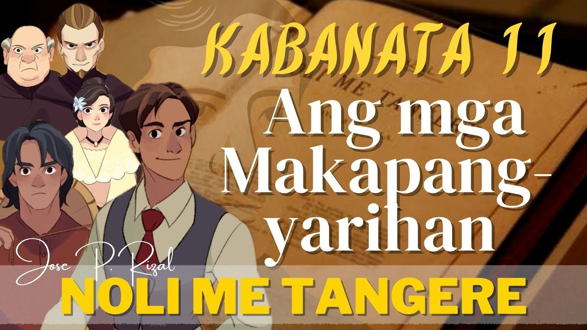
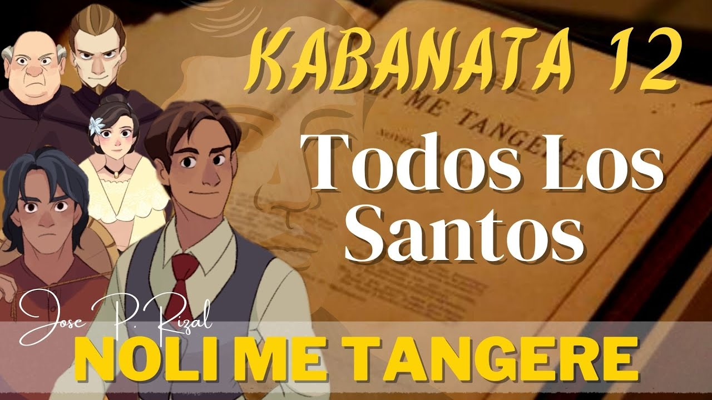
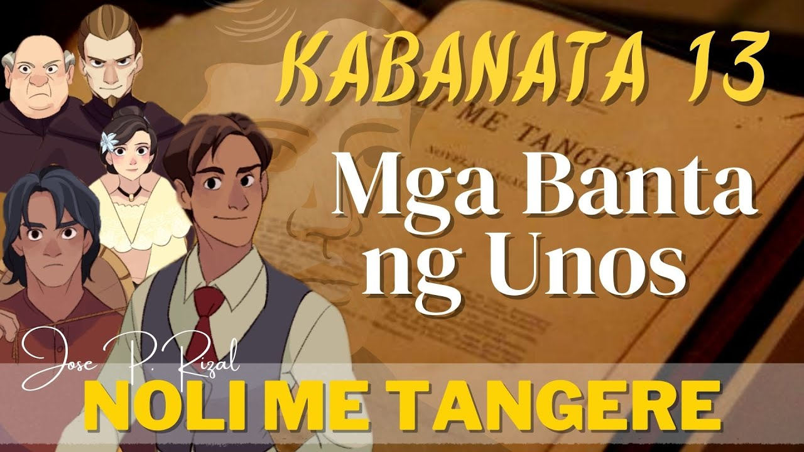
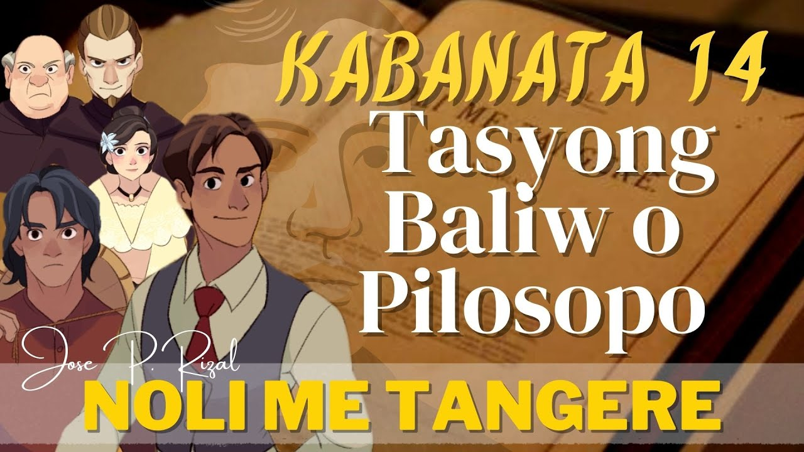
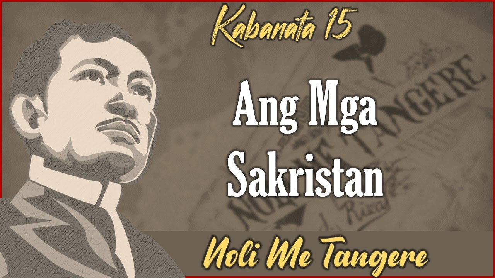

Noli Me Tángere
Kabanata XI
Mga Hari-Harian

Bagamat Don Rafael, ang tawag sa ama ni Ibarra, hindi siya ang kinikilalang makapangyarihan kahit na siya ang pinakamayaman. Pero, siya ay iginagalang at halos lahat ng mga tao ay mayroong pagkakautang sa kaniya. Sa kabila ng kabusilakan ng kaniyang damdamin, siya ay kinalaban ng magkaroon ng usapin at ni wala pa ngang kakampi.
Si Kapitan Tiago man, kahit na masalapi at sinasalubong ng banda ng musiko at hinahainan ng masasarap na pagkain kapag nagpupunta sa bayan,siya ay nakatalikod, siya ay tinayawag na Sakristan Tiago.
Ang kapitan sa bayan ay hindi rin kabilang sa mga tinatawag na casique o makapangyarihan. Ang kaniyang puwesto ay nabili niya sa halagang P5,000. Madalas siyang sabunin at kagalitan ng alkalde mayor.
Ang San Diego ay maihahalintulad sa Roma at Italya sa mahigpit na pag-aagawan sa kapangyarihan pamunuan ng bayan. Ang mga ito ay sina Pare Bemardo Salvi, isang payat at batang pransiskano at siyang pumalit kay Padre Damaso. Payat siya sapagkat mahilig siyang mag-ayuno. Kung ihahambing siya kay Padre Damaso, siya ay mabait at maingat sa tungkulin. Si Padre Salvi ay ang Alpares at ang kaniyang asawa na si Donya Consolacion, isang Pilipina na mahilig maglagay ng mga kolorete sa mukha. Ang alpares ang puno ng mga guwardiya sibil. Ang pagkakapangasawa niya ay binubunton niya sa pamamagitan ng paglalasing, pag-uutos sa mga sundalo na magsanay sa init ng araw o dili kaya ay sinasaktan ang kaniyang eposa.
Bagama’t may hidwaan ang alpares at Padre Salvi kapag sila ay nagkikita ay pareho silang nagpaplastikan. Sila ay nagbabatian sa harap ng maraming tao at para walang anumang namamagitan di pagkakaunawaan. Pero, kapag hindi na magkaharap gumagawa sila ng kani-kanilang mga paraan para makapaghiganti sa isa’t-isa.
Ang alpares at Padre Salvi ang tunay na makapangyarihan sa San Diego. Ang tawag sa kanila ay mga casique.
Noli Me Tángere
Kabanata XII
Todos Los Santos (Araw ng mga Patay)

Ang sementeryo ng San Diego ay nasa kalagitnaan ng isang malawak na palayan at may bakod na lumang pader at kawayan. Lubhang napakakipot ng daang patungo rito. Ito ay maalikabok kung tag-araw at nagpuputik naman kung tag-ulan.
Mayroong isang malaking krus na nasa gitna ng libingan. Ito ay mayroong nakatungtong na bato at nakatitik ang INRI sa isang kuping lata na niluma na ng panahon. Masukal ang kabuuan ng libingan.
Sa ibang bahagi ng libingan, may dalawang tao ang humuhukay ng paglilibingan na malapit sa pader na parang babagsak na. Ang isa ay dating sepulturero at ang isa naman ay parang bago sapagkat hindi siya mapakali, dura ng dura sa lupa at panay ang hitit ng sigarilyo.
Sinabi ng naninigarilyong lalaki sa sepulturero na lumipat na sila ng ibang lugar sapagkat sariwa at dumudugo pa ang bangkay na kaniyang hinuhukay. Hindi niya matagalan ang gayong tanawin.
Sumagot ang kausap na siya raw ay napakaselan at marahil kung siya ang nasa kaniyang kalagayan na ipinahukay ang isang bangkay na may 20 araw pa lang nalilibing sa gitna ng kadiliman ng gabi, kasalukuyang bumubuhos ang malakas na ulan at namatay ang kaniyang ilaw ay lalo siyang mandidiri at kikilabutan ang buong katawan. Ang bangkay anya ay kailangang pasanin at ilibing sa libingan ng mga intsik.
Gayunman, dahil nga sa malakas ang buhos ng ulan at kabigatan ng bangkay, minarapat na lamang na itapon niya ito sa lawa. Ito ay dahil sa utos ng malaking kura na si Padre Garrote.
Noli Me Tángere
Kabanata XIII
Mga Banta ng Unos

Dumating si Ibarra sa libingan at hinanap ang puntod ng ama- si Don Rafael. Kasama niya ang isang matandang utusan niya. Sinabi ng matanda kay Ibarra, na si Kapitan Tiyago ang nagpagawa ng nitso ni Don Rafael. Ito anya ay tinaniman niya ng mga bulaklak ng adelpa at sampaga at nilagyan ng krus.
Nakita nina Ibarra at matanda ang sepulturero. Sinabi nila ang palatandaan ng libingan ni Don Rafael. Tumango ang tagapaglibing. Pero, nasindak si Ibarra ng ipagtapat ng sepulturero na kaniyang sinunog ang krus at itinapon naman ang bangkay sa lawa dahil sa utos ni Padre Garrote. Higit umanong mabuti na mapatapon ang bangkay sa lawa kaysa makasama pa ito sa libingan ng mga intsik.
Parang pinagtakluban ng langit at lupa si Ibarra. Nasindak siya ng husto. Ang matanda naman ay napaiyak sa kaniyang narinig. Parang baliw na nilisan ni Ibarra ang kausap hanggang sa makasalubong niya si Padre Salvi na nakabaston na may puluhang garing.
Kaagad na dinaluhong ni Ibarra si Padre Salvi. Bakas sa mukha ni Ibarra ang nagalalatang na poot at galit sa dibdib. Nararamdaman iyon ni Padre Salvi. Tinanong ni Ibarra si Padre Salvi kung bakit nagawa nila ang malaking kalapastangan sa kaniyang ama. Sumagot si Padre Salvi na hindi siya ang may kagagawan niyon kundi si Padre Damaso na tinawag na Padre Garrote.
Noli Me Tángere
Kabanata XIV
Tasiong Baliw o Pilosopo

Si Pilosopo Tasio ay dating Don Anastacio. Siya ay laging laman ng lansangan, walang tiyak na direksiyon ang kaniyang paglalakad. Nang araw na iyon ay dumalaw din siya sa libingan upang hanapin ang puntod ng nasirang asawa. Ang pagkakilala kay Tasyo ng mga mangmang ay isang taong may toyo sa ulo o baliw.
Anak siya ng mayaman. Pero, dahil sa katalinuhan niya ay pinahinto sa pag-aaral mula sa dalubhasaan ng San Jose. Natatakot kasi ang kaniyang ina, na dahil sa pagtatamo niya ng higit na mataas na kaalaman, baka makalimutan niya ang Diyos. Isa pa, gusto ng kaniyang ina na siya ay magpare. Pero, hindi niya ito sinunod at sa halip ay nag-asawa na lamang siya. Gayunman, pagkaraan ng isang taon, namatay ang kaniyang asawa. Inukol na lamang ni Tasyo ang sarili sa pagbabasa ng mga aklat hanggang sa mapabayaan niya ang kaniyang mga minanang kayamanan.
Bagamat nang hapong iyon mayroong babala na darating ang unos sapagkat matatalim na kidlat ang gumuguhit sa nagdidilim na langit, masaya pa rin ang hitsura ni Pilosopo Tasyo. Ito ang ipinagtaka ng mga taong nakakausap niya. Tinanong siya kung bakit, Diretso ang sagot niya:”Ang pagdating ng bagyo ang tangi kong pag-asa sapagkat’t ito ang magdadala ng mga lintik na siyang papatay sa mga tao at susunog sa mga kabahayan. Sana magkaroon din ng delubyo sapagkat may sampung taon na ngayon, isinuwestiyon ko sa bawat kapitan ang pagbili nila ng tagahuli ng kidlat o pararayos ngunit ako’y pinagtawanan lamang ng lahat.”
Ayon pa sa kaniya, hindi binili ng mga kapitan ang kaniyang pinabibili at sa halip ay mga paputok at kuwitis ang kanilang binili at binayaran ang bawat dupikal ng kampana, gayong sa agham ay mapanganib ang tugtog ng mga batingaw kapag kumukulog. Iniwanan ni Tasyo ang kausap at nagtuloy ito sa simbahan. Inabutan niya ang dalawang bata sa pagsasabing ipinaghanda sila ng kanilang ina ng hapunang pangkura. Tumanggi ang mga bata.
Lumabas ng simbahan si Tasyo at nagtuloy sa may kabayanan. Nagtuloy siya sa bahay ng mag-asawang Don Filipo at Aling Doray. Masayang sinalubong ng mag-asawa at itinanong kung nakita niya si Ibarra na nagtungo sa libingan. Sumagot siya ng oo sa pagsasabing nakita niya itong bumaba sa karwahe. Naramdaman niya, anya, ang naramdaman ni Ibarra nang hindi makita ang libing ng ama. Ayon kay Tasyo isa siya sa anim na kataong nakipaglibing kay Don Rafael.
Sa pag-uusap pa rin nila, nabanggit ni Aling Doray ang tungkol sa purgatoryo sapagkat noon ay undas nga. Sinabi ni Tasyo na hindi siya naninwala sa purgatoryo. Pero, sinabi niyang iyon ay mabuti, banal at maraming kabutihan ang nagagawa nito sa tao upang mabuhay ng malinis at dalisay na pamumuhay. Binigyang diin pa niya na ang purgatoryo ay siyang tagapag-ugnay ng namatay sa nabubuhay.
Pagkuwa’y nagpaalam na siya. Palakas ng palakas ang buhos ng ulan. Ito ay sinasalitan ng matatalim na kidlat at kulog. Siyang-siya si Pilosopo Tasyo sa gayong pangyayari sapagkat nakataas pa ang kaniyang dalawang kamay at nagsisigaw habang naglalakad papalayo sa mag-asawa.
Noli Me Tángere
Kabanata XV
Mga Sakristan

Parang plegarya ang tunog ng kampanang binabatak ng magkapatid na sakristan na sina Crispin at Basilio. Sila ang kausap kanina ni Pilosopo Tasyo at sinabihan ng sila ay hinihintay ng kanilang inang si Sisa para sa isang hapunang pangkura. Sa anyo ng hitsura ng magkapatid mapagsisino na sila ya hilahod sa hirap.
Sinabi ni Crispin kay Basilio ng kung kasama sila ni Sisa. Disin sana, siya ay hindi mapagbibintangang isang magnanakaw. At kung malalaman ni ni Sisa na siya ay pinapalo, tiyak hindi papayag ang kanilang ina. Ang anyo ng pangamba sa mukha ni Crispin ay nababakas. Idinadalangin na sana magkasakit silang lahat. Ang suweldo lang kasi ni ay dalawang piso sa isang buwan. Minultahan pa siya ng tatlong beses. Pero, hindi pumayag si Basilio sapagkat walang kakainin ang kanilang ina. Isa pa ang katumbas ng dalawang onsa ay P32.00. lubhang mabigat ito para kay Basilio.
Ipinakiusap ni Crispin na bayaran na lamang ni Basilio ang ibinibintang sa kaniya. Pero, kulang pa ang sasahurin ni Basilio kahit magbayad sila. Dahil dito, nasabi ni Crispin na mabuti pa ngang magnanakaw na siya sapagkat maililitaw niya ito. At kung papatayin man siya sa palo ng kura at siya’y mamamatay magkakaroon naman ng mga damit si Sisa at ang kapatid na si Basilio. Nasindak ang huili sa binanggit ng kapatid.
Nag-aalala pa si Basilio na kapag nalaman ng kanilang ina napagbintangang nagnakaw si Crispin, tiyak na magagalit ito. Pero, sinabi ni Crispin na hindi maniniwala ang kanilang ina sapagkat ipikikita niya ang maraming latay na likha ng pagpalo ng kura at ang bulsa niyang butas-butas na walang laman kundi isang kuwalta na aginaldo pa niya noong paslo, na kinuha pa sa kaniya ng hidhid na kura.
Gulo ang isip ni Crispin dahil mahirap na gusot na napasukan nilang magkapatid. Gusto niyang makauwi silang magkapatid upang makakain ng masarap na hapunan. Magmula ng mapagbintangan siyang nagnakaw, hindi pa siya pinapakain hangga’t hindi niya naisauli ang dalawang onsa. Maliwanag sa mga pahayag ni Crispin na kaya siya napagbintangang magnanakaw sapagkat ang kanilang ama ay mabisyo, lasenggero at sabungero.
Habang nag-uusap ang magkapatid, ang sakristan mayor ay walang kilatis na nakapanhik sa palapag na kinaroonan nila. Antimano, puyos ito sa galit. Sinabi niya kay Basilio na ito ay kaniyang minumultahan dahil sa hindi tamang pagtugtog ng kampana. Kapagdaka, si Crispin naman ang hinarap at sinabing hindi ito makakauwi hanggang hindi niya inilalabas ang dalawang onsa na binibintang sa kaniya. Tinangkang mangatwiran ni Basilio, pero sinanslaa siya ng sakristan mayor sa pagsasabing kahit na siya ay hindi makakauwi hanggang hindi sumasapit ang eksaktong ika-10 ng gabi. Gimbal si Basilio sapagkat ika-9 pa lamang ng gabi ay wala ng puwedeng maglakad sa lansangan kung gabi. Makikiusap pa sana si Basilio, pero biglang sinambilat ng sakristan mayor si Crispin sa bisig at kinaladkad na papanaog sa hagdanan hanggang sa sila ay lamunin sa dilim. Dinig ni Basilio ang pagpapalahaw ng kapatid. Pero, wala siyang magawa, naiwan itong parang tulala. Ang bawat pagsampal ng sakristan kay Crispin ay sinusundan ng masakit na pagdaing. Nanlaki ang mata at nakuyom ni Basilio ang kaniyang palad sa sinapit ng kapatid. Pumasok sa isip na kung kailan siya maaaring magararo sa bukid habang naririning niya ang paghingi ng saklolo ni Crispin. Mabilis na pumanhik siya sa ikalawang palapag ng kampanaryo. Mabilis na kinalag niya ang lubid na nakatali sa kampana at nagpatihulog na padausdos sa bintana ng kampanaryo. Noon ang langit ay unti-unti ng nagliliwanag sapagkat humihinto na ang ulan.